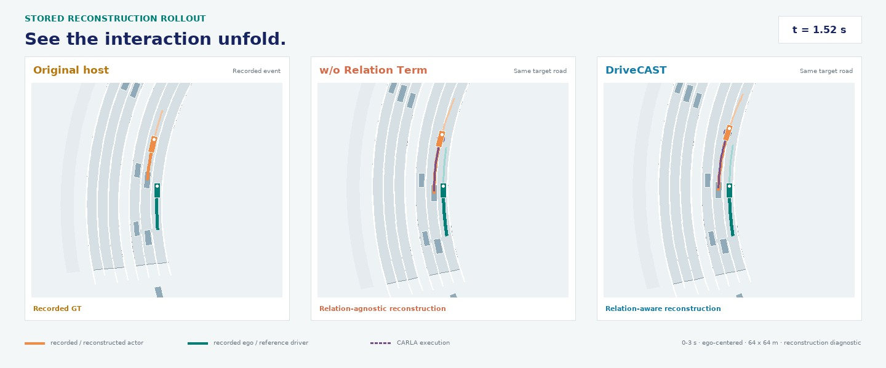

Inter2Scene
Adjusts surrounding-vehicle motion under road, kinematic, and history-continuity constraints to match selected interaction relations.
Anonymous ICRA 2027 submission
Transfer recorded interactions to new road contexts.
Learn from reconstructed experience. Plan from cameras.
01 · Overview
Transferring recorded driving scenarios to new environments does not necessarily preserve interaction conditions, and the original images and ego actions may no longer be suitable for training on the modified scenarios. We propose DriveCAST, an interaction-preserving scenario transfer framework for camera-based planning.
Inter2Scene formulates surrounding-vehicle motion adjustment as constrained matching of selected relative and temporal relations defined with respect to consistently computed reference ego trajectories, while keeping the target road and ego conditions fixed. A common reference driver then generates new ego trajectory targets in simulation. Scene2BEV converts reconstructed scenes into bird’s-eye-view features compatible with camera-derived representations.
These features are used alongside original camera data to train a shared planner, while the image encoder and Scene2BEV remain frozen. This enables learning from transferred experience without rendering camera images for every transferred scene or changing the camera input pathway at inference. We evaluate open- and closed-loop planning through the camera input pathway, with matched external-data volumes and training budgets for comparison with constrained geometric transfer.
02 · Closed-loop driving
A selected camera-policy rollout in CARLA. Both policies use the same route, weather, and traffic seed.
Need a closer look? Select BEV detail. Views retain the same playback time.
Base Planner records three car-collision events; DriveCAST completes this route without a collision. Each row shows synchronized front and third-person cameras, with ego-centered BEV on the right.
Selected qualitative example, not an aggregate result. BEV overlays the latest saved policy plan (2 Hz) on recorded overhead imagery using the Bench2DriveZoo trajectory renderer. These are not predicted detection boxes. Views share the same camera frame; playback is real time and completed runs hold their final frame. See manuscript results below.
03 · Method
Interaction-preserving transfer for training; the original camera pathway at inference.
 Figure 2 · Overall architecture from the submitted manuscript View full size ↗
Figure 2 · Overall architecture from the submitted manuscript View full size ↗
Adjusts surrounding-vehicle motion under road, kinematic, and history-continuity constraints to match selected interaction relations.
Executes the reconstructed scenario with a common reference driver and produces new ego supervision.
Maps structured road and vehicle histories to compatible BEV features for shared planner training.
04 · Scenario transfer
Compare the original host, reconstruction without the relation term, and DriveCAST. These examples show scene reconstruction, not learned-policy execution.
Keep fixedTarget road and ego conditions
PreserveSelected spatial and temporal relations
RegenerateReference-driver ego supervision

Stored GT and CARLA trajectories over 0–3 s, with ego fixed at the center and facing up in each view. This is a reconstruction diagnostic, not a learned-policy prediction.

Selected reconstruction diagnostic. The edited-scene ego path is a stored reference-driver rollout, not a learned policy prediction.
05 · Manuscript results
All driving evaluations retain the original camera input pathway. Generated features are used only during planner training.
DriveCAST and constrained geometric transfer use matched external-data volumes and training budgets. Values are reported point estimates.
| Training configuration | External data | Driving Score ↑ | Success Rate ↑ | Efficiency ↑ | Comfortness ↑ |
|---|---|---|---|---|---|
| Base Planner | — | 36.78 | 14.55% | 133.59 | 64.67 |
| B2D Fine-tuning | — | 37.00 | 16.36% | 130.52 | 66.94 |
| Native Log Replay | nuScenes | 36.85 | 15.45% | 134.65 | 66.05 |
| Constrained Geometric Transfer | nuScenes | 36.42 | 14.55% | 136.41 | 66.05 |
| DriveCAST | nuScenes | 37.91 | 15.91% | 137.19 | 66.97 |
| DriveCAST | nuScenes + nuPlan | 39.29 | 19.09% | 126.27 | 66.23 |
All configurations include Bench2Drive training data. Bold marks the best value in each column. Adding nuPlan raises Driving Score and Success Rate, with lower Efficiency and Comfortness than nuScenes-only DriveCAST.
 Camera-input planningBase Planner vs. DriveCAST · two selected scenes from the paper's qualitative comparisonView full size ↗
Camera-input planningBase Planner vs. DriveCAST · two selected scenes from the paper's qualitative comparisonView full size ↗
06 · Citation
Author and affiliation information is intentionally omitted during review.
@inproceedings{anonymous_drivecast,
title = {DriveCAST: Interaction-Preserving
Transfer of Driving Scenarios},
author = {Anonymous}
}